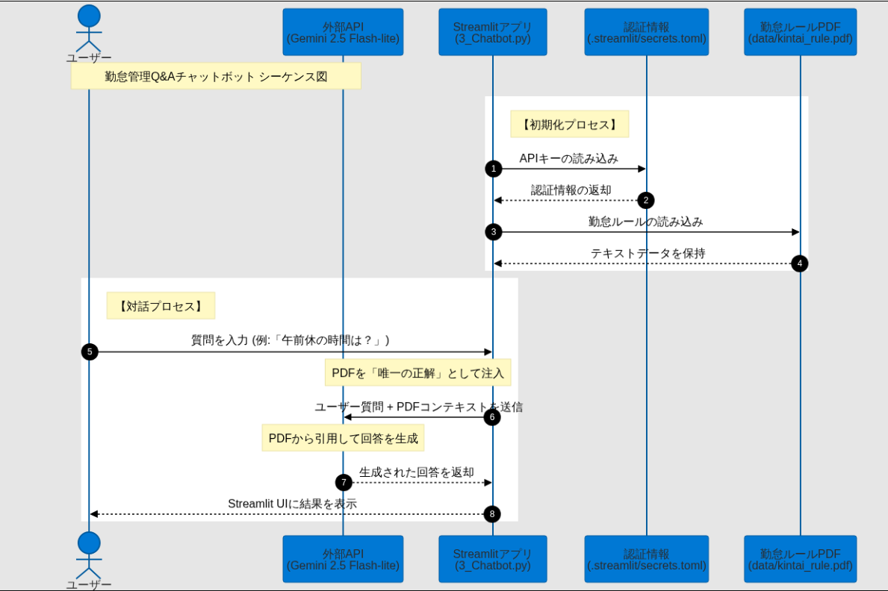
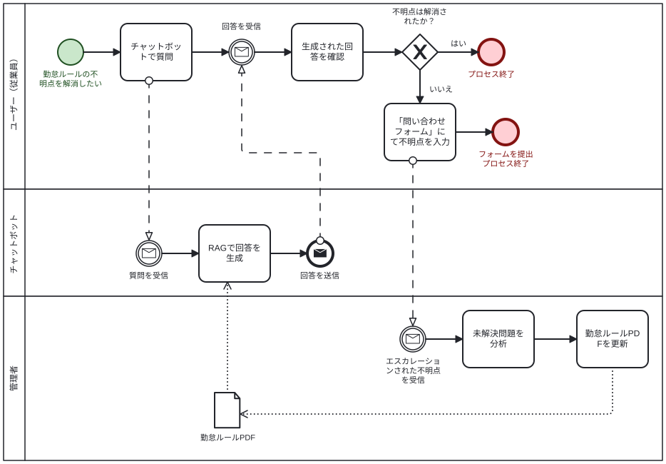

勤怠管理Q&Aチャットボット
Gemini API × RAGによる社内問い合わせの自動化と、PDCA運用・インフラ最適化の設計
※新アプリは現在Google Cloudへのデプロイを想定して構築中です。
💡 プロジェクト概要と課題
実務課題の解決背景、RAGによる根拠回答の仕組みについて
🛠️ 構成図 & 技術スタック
システム設計、新旧アーキテクチャの比較、セキュリティ設計について
🔄 PDF更新サイクル(PDCA)
AIが答えられなかった質問を収集し、PDF更新で解決する運用設計
Gemini API × RAGによる社内問い合わせの自動化と、PDCA運用・インフラ最適化の設計
※新アプリは現在Google Cloudへのデプロイを想定して構築中です。
実務課題の解決背景、RAGによる根拠回答の仕組みについて
システム設計、新旧アーキテクチャの比較、セキュリティ設計について
AIが答えられなかった質問を収集し、PDF更新で解決する運用設計
私は現在、勤怠管理ツールの担当として、新規入職者からの問い合わせ対応や、ルールの確認・エスカレーション業務に従事しています。
業務の中で直面した「新規入職者から同じような質問が毎回届き、担当者や上司への確認作業で業務負荷が発生している」という実務課題を解決するため、本システムを開発しました。
就業規則PDF（原本）から関連情報を検索し、Gemini APIが「提供資料外の推測回答を禁止」するプロンプトに従って、信頼性の高い回答を生成します。
想定質問のテストケース20件を用いて精度検証を自動化。合格率の可視化や不合格ケースのみを絞り込む機能により、開発時のQA（品質保証）を可視化しています。
AIで解決しなかった質問はフォーム経由でデータ化。管理者がPDFを差し替えるだけで、プログラミング不要で回答精度を向上させ続けるサイクルを設計。

アプリが起動した際、セキュリティを考慮し環境変数やSecrets設定ファイルから安全にAPI認証情報を読み込みます。その後、就業規則PDFからテキストデータを抽出し、検索用メモリ空間を確保します。
ユーザーが質問を入力すると、その質問内容とPDFテキストを組み合わせてシステムプロンプトに注入します。Gemini 2.5 Flash-liteモデルに送り、コンテキストに基づいた厳格な回答をUIに表示します。
| 評価軸 | プロトタイプ（旧） | 本番想定（新） | 改善の理由・メリット |
|---|---|---|---|
| 初期読込速度 | ⚠️ 遅い | ✅ 非常に高速 | 静的HTML配信によるUX向上 |
| インフラコスト | ⚠️ 高い | ✅ 最小 | サーバーレスによる最適化 |
| セキュリティ | ⚠️ 低い | ✅ 高い | 機密情報の強固な分離 |
| 開発言語 | Python 3.13.2 / HTML / JS |
| AIモデル | Gemini 2.5 Flash-lite |
| インフラ | Cloud Run / Secret Manager |
ハルシネーションの抑制、機密情報の保護、そしてプログラム改修不要なメンテナンス性を重視して設計しています。
AIアプリを現場に定着させるため、答えられなかった質問（未解決課題）を吸い上げて解決に導く運用サイクルを設計しています。

💡 詳細を表示
💡 詳細を表示
💡 詳細を表示
💡 詳細を表示
名前 (GitHub名): Fujio-m
年齢: 34歳
エンジニアとして、まずはシステム開発の基礎やテスト、ヘルプデスク等の幅広い工程から実務経験を積み、様々な案件に対応できる技術スキルを養いたいと考えています。
日々の運用で発生するユーザーやチームの小さなストレスを吸い上げ、AIの活用や自動化といった技術を駆使して「現場の作業負担を改善・効率化できる人材」を目指しています。